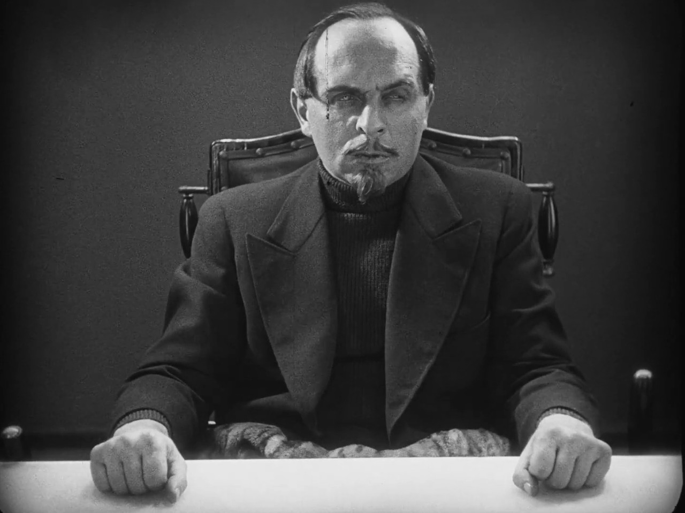

Spies, frame at 39:26
Fritz Lang · 1928 · Silent film, black and white (frame)
Free to use
Spione was the first film made by Fritz Lang's own production company. He wrote it with his wife, Thea von Harbou, who published it as a novel a year later, and it was made on a much smaller budget after Metropolis did poorly at the box office. Rudolf Klein-Rogge, who plays the master criminal Haghi, was von Harbou's first husband.